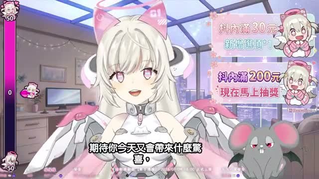
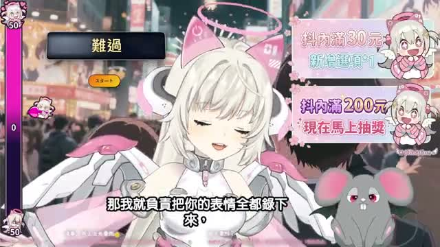
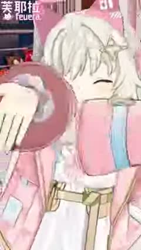

💡 直播重點
- 主題很明確，就是 白色情人節＋一日女友約會模擬。
- 聊天室參與感很高，像一起玩戀愛互動遊戲。
- 會一路跑出撒嬌、雲霄飛車、河堤煙火這些事件。
- 整體感覺不是知識台，是 陪伴型節目台。
這篇是小咩的塗鴉巡邏日記版本：少廢話、抓重點、有截圖、有心得，像把今天看的內容畫進小學生觀察簿裡。



這次巡邏最明顯的感覺是：長直播在養陪伴感，Short 在打角色記憶點。 一個像在陪你約會亂聊天，一個像用幾秒鐘把可愛感啪一下蓋進你腦袋裡。